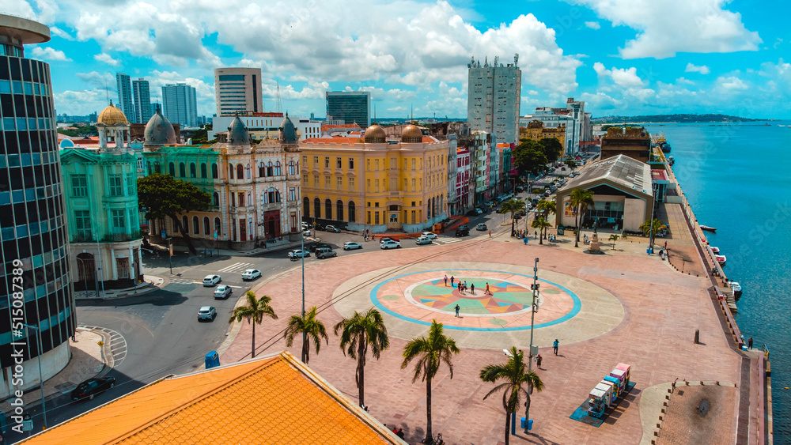
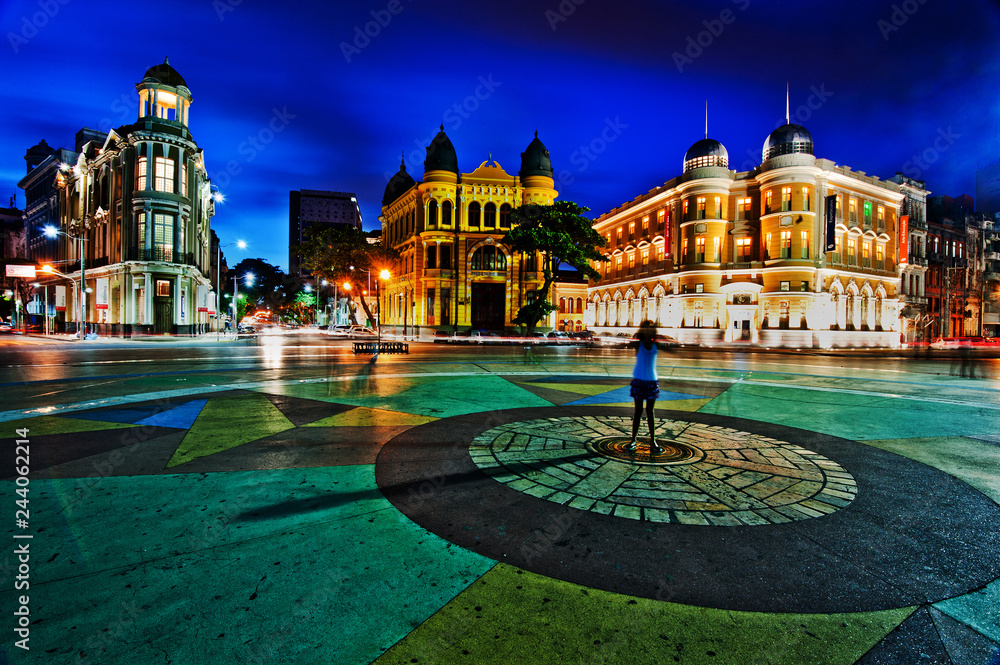
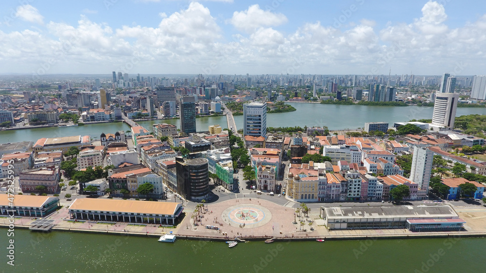

O que é o Marco Zero?
O Marco Zero é considerado o ponto de partida da cidade do Recife, marcando a origem das suas principais vias e representando a cultura e a história do Nordeste do Brasil.
História
Inaugurado em 1930, o Marco Zero foi projetado pelo arquiteto Augusto Malta e possui um mosaico em sua base que retrata os símbolos da cidade. É um local de grande importância cultural e social.
Pontos Turísticos Próximos
Próximo ao Marco Zero, você pode visitar o Teatro de Santa Isabel, o Palácio do Campo das Princesas e a Praça do Arsenal. Esses locais complementam a experiência de quem visita a região.
